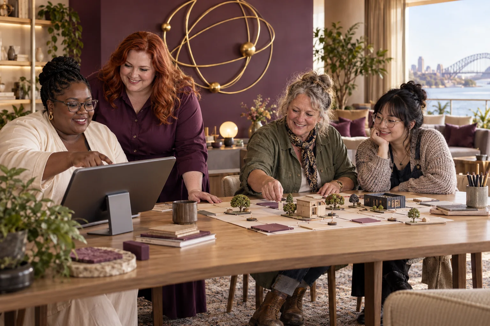

Invite paid lived-experience advisers through an appropriate willing organisation.

500 Queens / Female Prisoner Rehabilitation
Female Prisoner Rehabilitation
Support women returning from prison through participant-led learning, practical access and accountable human relationships.
Follow the connections. Choose your direction.
The need worth working on.
A rehabilitation concept can become paternalistic if it defines success without the women involved. Returning to community life may involve work, housing, family, service navigation and the chance to be seen beyond a conviction. A useful venture should ask which practical barrier women want help addressing.
What the enterprise could offer.
Develop a proposed re-entry learning and navigation service with experienced community organisations and paid lived-experience advisers. Begin with a fictional service journey and one practical resource. AI, if used at all, would assist clearly bounded tasks rather than assess risk, determine eligibility or replace human support.
People to build with
- Women with lived experience of imprisonment who choose to participate
- Community organisations providing re-entry support
- Employers or educators examining a specific access barrier
One practical return-to-community pathway
Let advisers choose a task such as understanding a training route or preparing for an appointment.
Map current information and identify where people must repeat their story.
Test a resource using fictional situations and voluntary feedback.
Give advisers approval over any public findings and identify the human service responsible for follow-through.
The first result
A participant-reviewed resource and a clearly assigned next service improvement.
What needs to be demonstrated.
Practical pilot
The starting evidence
A community organisation can co-design practical learning and navigation resources. This proposal establishes no correctional programme or measured rehabilitation result.
The open question
No partner, participant access, service capacity, programme authority or evaluated outcome is confirmed.
The next measurement
Check whether the selected resource helps users complete the chosen task without unnecessary disclosure.
Build the means to deliver.
Useful capabilities and resources
- Paid lived-experience advisers
- An experienced re-entry organisation and facilitator
- Current service information and clear human responsibility
A possible business model
Commissioned community service design or supported learning programmes, with participant benefit and fair pay central to the model.
A leadership decision to practise
Give women with lived experience real power over the service and their stories. Separate support from surveillance and automated judgement.
People, consequences and decisions.
- Participation may feel compulsory if authority relationships are unclear.
- Public storytelling can expose personal history people wish to keep private.
- A resource may point to services without available capacity.
If equality were being designed now...
- Can women choose what history to disclose and what future to pursue?
- Does the pathway address care, housing and transport rather than demanding motivation alone?
Begin with women's own experiences across bodies, ages, cultures and places. Invite disagreement and choose a practical change together.
Create a women-led design brief →Build your learning council.

Civilisation PillarSuper Queen (Aura)
Aura, a transcultural intelligence archetype
Bring the parts into a system people can trust.
Build alongside these ideas.
Humanities and funJust-In-Time Learning
Offer useful learning at the moment someone is ready to do a real task.
Practical pilot
Humanities and funMental Health Support
Help people find a suitable next human support step without turning distress into a product label.
Practical pilot
Market analysisEducation and Training
Identify training opportunities from real learner barriers and actual tasks employers need done.
Practical pilot
Market analysisGoverning Protocol & Confidence
Make shared decisions easier to follow, challenge and improve.
Practical pilot
Follow existing public concept work.
Connected public conceptMutual Futures
Explore how retiring business owners, workers and communities could build shared ownership, reliable livelihoods and more time for life.
Connected public conceptGAJRA Earth Infinity
A public practice for listening, choosing useful actions, examining results and improving what comes next.
Connected public conceptReady S.E.T. Cultural Intelligence Node
Explore shared local computing alongside sustainable employment, training, media, making and cultural collaboration.
From the original suggestion to a working brief.
Developed from original enterprise 120 in the 500 Queens VC NEW Long presentation (slide 18) and the planning document (page 8). This expanded brief is a proposed development path, not evidence of an operating venture or a confirmed partner.
Original title: Female Prisoner Rehabilitation. The pilot, business model and learning connections on this page are proposed developments of that original idea.